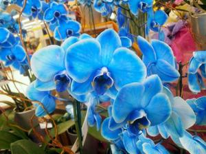
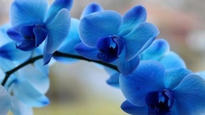
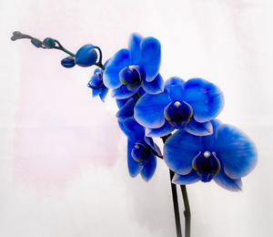
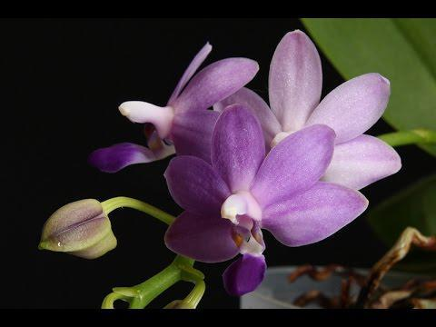
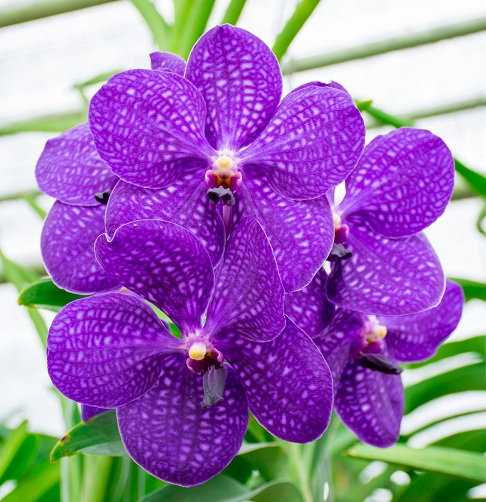

<div class="container">
    <div class="bluorh">
        <h1>Краса від природи або втручання людини</h1>
        <div class="text">
            Сині орхідеї вражають своєю красою і рідкісною, незвичайної забарвленням пелюсток. У квіткових магазинах ці квіти з’єднання явилися порівняно недавно, але вже завоювали популярність. Проте не всі покупці знають, у чому секрет дивовижного кольору цих рослин.
            <h6>Що ховається за синім забарвленням?</h6>
            <div class="image1">
                
            </div>
            Нерідко щасливі володарі орхідей з синіми або блакитними квітами з подивом виявляють, що в наступне цвітіння бутони стають вже не яскравого, насиченого кольору, а брудно-блакитного, а то і зовсім білого. Це пов’язаність язано з тим, що рослини забарвлюють за допомогою хімічного барвника. Багато магазинів цього не приховують і розміщують на етикетках до квітів відповідні попередження. Альо активно ця інформація серед покупців не поширюється, тому часто власники забарвлених кольорів залишаються згодом розчарованими.
            Фарбують найчастіше орхідеї білого кольору, оскільки на них найпростіше добитися рівномірного фарбування. З годиною барвник вимивається, і квіти повертаються до свого первісного кольору.
            <h6>Як з'явилися сині орхідеї</h6>
            <div class="image1">
                
            </div>
            У 2011 році на виставці тропічних рослин у Флориді (Сша) був уявлень перший в світі синій фаленопсис. Зробила це ферма з вирощування орхідей «Silver Vase» з Південної Флориди.
            Минуло лише 3 місяці, і стало відомо про появу ще однієї синьої орхідеї — Phalaenopsis Royal Blue (Королівський Блакитний Фаленопсис). На цей раз дія відбувалася в Голландії на щорічному квітковому конкурсі FloraHolland. Екзотична квітка з блакитними пелюстками представивши голландській розплідник «Geest Orchideeën», за що й отримав нагороду в категорії «Концепція продажів». Один з членів журі конкурсу передбачив у майбутньому величезну популярність орхідеї у покупців.
            Цікавий факт: виробники не приховують того, що синій колір не є натуральним, а також того, що наступне цвітіння буде білим. Фарбування вони виробляють за запатентованою технологією, подробиці якої не розголошуються. За словами виробників, суть її така: рослини поміщають у спеціальне середовище, для створення якої використовуються елементи природного походження, того сама процедура не завдає шкоди орхідеям.
            Можна зробити висновок: синій фаленопсис – це не природний вигляд і не ранньостиглий, тривалість, виведений селекціонерами. Це всього лише маркетинговий хід, треба сказати, вельми вдалий.
            <h6>Синя орхідея в будинку: особливості догляду</h6>
            Проблема криється в тому, що деякі недобросовісні продавці, бажаючи додатково заробити, беруться за фарбування квітів самостійно. Результат своєї роботи смороду видають за Phalaenopsis Royal Blue і продають за ціною в три рази більшою, ніж звичайні білі фаленопсиси .
            Природно, ні про яку технології тут не йдеться. Фарбування годиною проводитися просто варварськими методами. Барвник, найчастіше це чорнило, вводитися шляхом ін’єкції в квітконіс, стебло або корінь. Ця процедура дуже послаблює рослину, будучи для нього джерелом стресу. Отруївшись шкідливими речовинами, квітка може просто загинути.
            Купивши або отримавши в подарунок синю орхідею, уважно огляньте її. Якщо слід від уколу видно на квітконосі, то у рослини шансів на виживання більше. Якщо ж робили ін’єкцію в корінь, то велика ймовірність загибелі орхідеї.
            Іноді фаленопсис фарбують за допомогою поливу забарвленою водою, в цьому випадку спостерігати синій відтінок можна не тільки на квітах, але і на листках і коренях. Виживе рослина чи ні, залежить від ступеня завданої йому шкоди.
            Орхідея випустила бутони не синього, а білого кольору? Не потрібно намагатися пофарбувати її самостійно, поливати її синькою або чорнилом. Від цього рослина може захворіти і загинути. Краще порадіти її природному, не менш красивому поряд.
            Не поспішайте пересаджувати фарбовану орхідею відразу після покупки — ще одного стресу вона може не витримати. В іншому вимоги по догляду за нею такі ж, як для звичайних орхідей, але потрібно уважно спостерігати за її станом.
            <div class="image1">
                
            </div>
            Якщо після покупки синя орхідея почала втрачати бутони, значить, вона не впоралася з негативним впливом барвника. У цьому випадку потрібно вжити термінових заходів щодо її порятунку. Для цього слід:
            Уход за орхидеейзрізати квітконіс, в якому містяться шкідливі барвники;
            промити коріння теплою водою, уважно їх оглянути і зрізати гнилі і посинілі ділянки;
            зрізи присипати золою і добре просушити;
            горщик очистити від старого ґрунту і заповнити новим, спеціально призначеним для орхідей;
            висадити квітка в новий грунт.
            Категорично не рекомендується використовувати старий субстрат, в якому знаходилося «хворе» рослина.
            <h6>Японське диво</h6>
            Японські селекціонери в 2013 році представили результат своєї багаторічної роботи – трансгенну синю орхідею. За основу вчені взяли білий фаленопсис Афродіта, який сам по собі дуже плідний і може випустити до 30 квіток за одне цвітіння. Рослині ввели ген, відповідальний за синій колір, від квітки Коммелины.
            Однак ця диво-орхідея зважаючи на своїй ексклюзивності поки залишається недоступною широкому колу садівників-любителів.
            <h6>Чи існують в природі сині орхідеї?</h6>
            Любителі екзотичних квітів будуть розчаровані: синіх фаленопсисов в природі не існує. У цього виду орхідей просто немає гена, відповідального за синій пігмент.
            Якщо ж вам сподобалися сині квіти на фотографіях, яких в інтернеті так багато, не поспішайте засмучуватися. Можна вибрати не фарбований фаленопсис, а Ванду – інший вид сімейства орхідей. Це дивовижний по своїй красі квітку, справжня королева. Але вона вимагає до себе належного ставлення і досить примхливе у плані догляду. У початківця садівника з нею можуть виникнути складності. Якщо Ванда приживеться у вас вдома, вона порадує розкішними блакитними, синіми або бузковими квітами. Їх забарвлення по своїй красі не буде поступатися глибоке індиго, яким пофарбовані фаленопсиси.
            Ще один приклад блакитний орхідеї – Каттлея. Порівняно з Вандою, вона менш вимоглива у догляді. У цього виду квіти великі, запашні, а їх забарвлення відрізняється різноманітністю.
            Фаленопсис – самий невибагливий вид серед блакитних орхідей. Проте в природі ви не знайдете того насиченого синього кольору, який буває у пофарбованих новини. Це будуть ледь вловимі відтінки блакитного кольору або рожево-блакитні, сині з бузковим відливом. Але і така забарвлення фаленопсисов зустрічається нечасто. Квітки у них невеликі, але зате натурального кольору.
            <div class="row">
                    <div class="col-4 post">
                        
                    </div>
                    <div class="col-4 post">
                        
                    </div>
                    <div class="col-4 post">
                        
                    </div>
                  </div>
            <h6>Кілька порад</h6>
            Наостанок кілька рекомендацій шанувальникам екзотичних рослин:
            Купувати синю або блакитну орхідею краще на спеціалізованих виставках, ніж в магазинах.
            Якщо купуєте фаленопсис в магазині, квіти з синіми листям і корінням обходьте стороною – швидше за все, така рослина незабаром загине.
            За фарбованим орхідеями необхідний більш ретельний догляд, оскільки деякий час після фарбування вони можуть хворіти.
            Вдаватися до фарбування в домашніх умовах не можна.
            Замінити фаленопсис з квітами штучного синього кольору можна іншими видами орхідей з натуральними відтінками.
            Купувати квіти з пелюстками синього або блакитного кольору? Кожен вирішує сам…
        </div>
    </div>
</div>